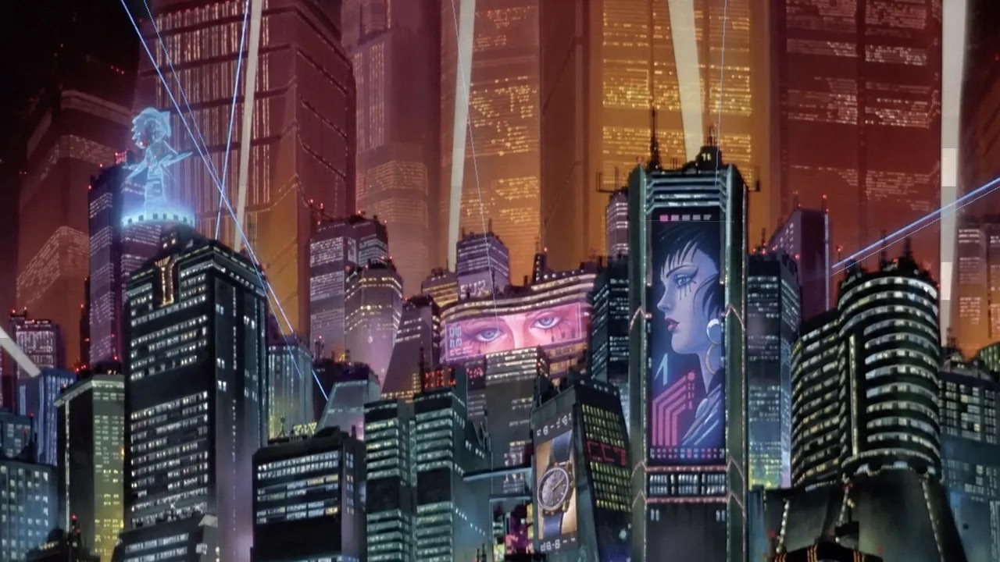

Loading loop…
- Format
- Animated WebP
- Resolution
- 1280 × 720
- Aspect
- 16 : 9
- Weight
- 10.6 MB
- Playback
- Seamless, endless
What moves in the frame
The still reads as one painting. The loop is five things drifting at different speeds — which is what keeps the city from looking like a screensaver.
-
Sky
Searchlight beams
Pale blue shafts cross the upper third on long, uneven arcs. They never sync, so the sky never repeats visibly.
-
Far
Sodium megastructures
The amber slabs behind everything hold almost still — a warm backplate that gives the cooler foreground something to sit against.
-
Mid
Window flicker
Thousands of lit cells switch at random intervals. Sparse enough to read as occupancy, not noise.
-
Signage
The billboards
A face in profile on the tall dark tower, a pair of eyes on the low block beside it, a watch ad down at street level. Each cycles on its own clock.
-
Near
Rooftop hologram
The cyan figure on the left-hand roof is the only thing in the frame with a body. It anchors the scale of everything behind it.